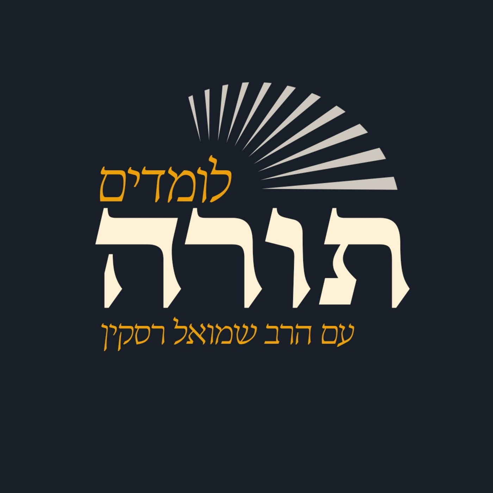

תורה־פּוֹד
פודקאסטים ושיעורי תורה להאזנה
בחרו פרק והתחילו להקשיב.
המשך האזנה
הפרקים החדשים
חיפושהצעות להתחלה
הצגת הכלעקבו אחרי פודקאסטים כדי לראות כאן את הפרקים החדשים שלהם.
פיד חיצוני
לומדים תורה עם הרב שמואל רסקין
הרב שמואל רסקין
283 פרקים
פרק אחרוןלמה הוכנסה שרה לארגז, ואיך הפך עפר לחרבות? | לך לך
פיד חיצוני
חסידות • לתורה ומצוות עם משמעות
הרב אשר פרקש
177 פרקים
פרק אחרוןסוד הכוח של יהודי לעמוד לבדו מול כל העולם | פרשת לך לך לאור החסידות
פיד חיצוני
Rabbi Elimelech Biderman הרה"צ ר' אלימלך בידרמן שליט"א
הרה"צ ר' אלימלך בידרמן שליט"א
587 פרקים
פרק אחרוןעברית - פרשת לך לך ח' חשון תשפ"ז